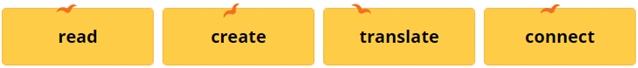
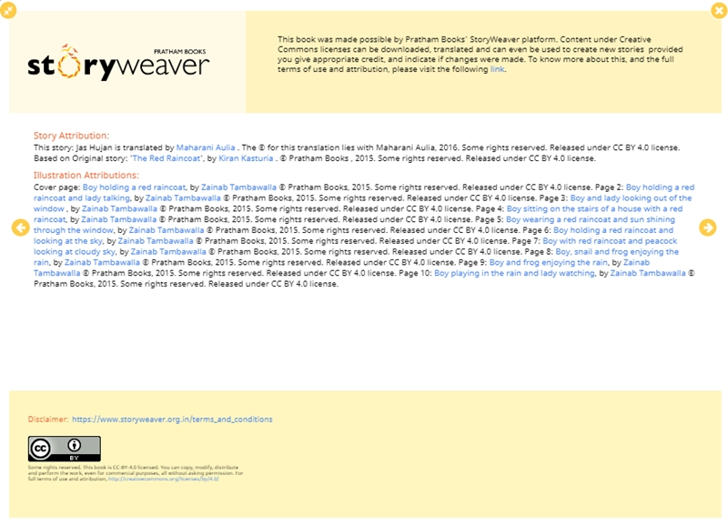
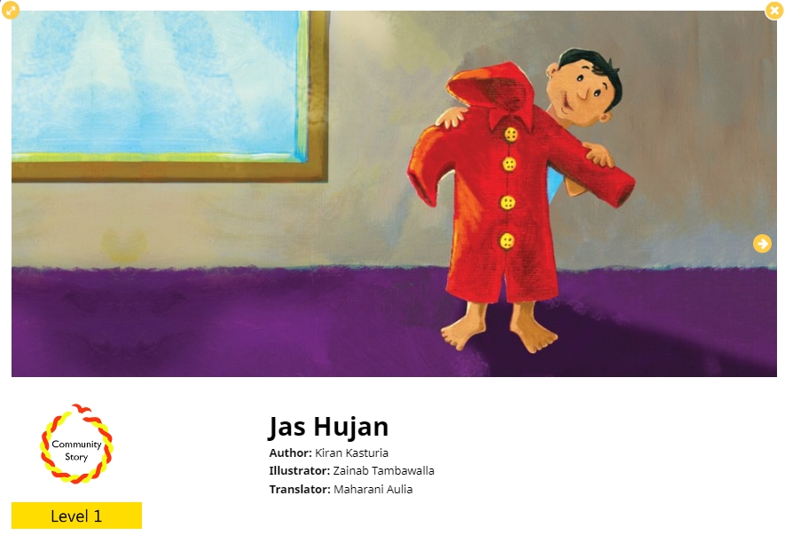

Jaringan Buku Cerita Anak Berlisensi Terbuka di StoryWeaver oleh Pratham Books

Pratham Books didirikan sebagai lembaga penerbitan nirlaba yang menerbitkan buku anak-anak sejak tahun 2004 dengan misi ‘untuk melihat buku di setiap tangan anak-anak’. Tujuan utama mereka adalah menerbitkan buku cerita yang berkualitas dengan harga terjangkau dalam beberapa bahasa India untuk menunjang kemampuan membaca anak-anak di India.
Sekitar 50% anak-anak di India tidak memiliki akses ke bahan bacaan yang sesuai dengan tingkatannya. Dari banyak faktor yang mempengaruhi hal ini adalah kurangnya bahan bacaan yang tersedia dalam bahasa ibu mereka. India mengalami kekurangan pasokan bahan bacaan yang layak untuk anak-anak. Ironisnya, akibat pengaruh mekanisme pasar, sebagai negara dengan 22 bahasa resmi, kebanyakan bahan bacaan hanya tersedia dalam bahasa Inggris dan Hindi saja. Pratham Books berupaya memenuhi kebutuhan bahan bacaan anak-anak yang layak dengan menciptakan model alternatif dalam membaca buku.
Dalam kurun waktu 10 tahun, Pratham Books telah menerbitkan 300 judul buku dengan menggunakan 18 bahasa asli India sebagai pengantar. Tema dari buku-buku yang diterbitkan juga begiut beragam mulai dari buku untuk pembaca pemula, fiksi, nonfiksi, hingga buku cerita dengan topik ilmu pengetahuan alam, sejarah, dan matemika. Mereka telah bekerja sama dengan banyak sekali penulis dan ilustrator dari berbagai negara. Buku-buku yang mereka terbitkan juga telah memenangkan beberapa penghargaan.
StoryWeaver merupakan situs web yang dinisiasi oleh Pratham Books. Situs web ini berusaha untuk menemukan cara baru dalam menyediakan kebutuhan memabaca bagi anak-anak. Seluruh cerita anak-anak di situs ini berlisensi Creative Commons, yang artinya cerita-cerita tersebut dapat digunakan secara bebas, termasuk diterjemahkan kembali ke bahasa lain. Mereka juga menyediakan 2000 lebih ilustrasi berlisensi terbuka yang dapat dimanfaatkan bagi pengguna yang hendak menyumbangkan cerita anak-anak baru di situs ini. Target utama dari proyek ini adalah memberikan pemahaman pada anak-anak, pengajarm dan orang tua bahwa cerita anak-anak dan berbagai komponennya kini tidak lagi diterbikan di bawah rezim hak cipta yang kaku. StoryWeaver bermaksud untuk membuka pintu “perpustakaan” selebar dan sebebas mungkin untuk semua anak di seluruh dunia.

Situs ini menyediakan empat macam pilihan aktivitas yang dapat diperankan oleh penggunanya, yaitu:
Ketika Anda berperan sebagai pembaca atau pengguna ciptaan, selain mengakses bacaan lewat situs ini, Anda juga dapat mengunduh dan mencetak cerita anak-anak yang Anda inginkan untuk Anda gunakan, misalnya di lembaga pendidikan tempat Anda mengajar, atau sekadar sebagai bahan bacaan untuk anak-anak Anda di rumah. StoryWeaver melengkapi situs ini dengan mesin pencari jika Anda memerlukan suatu bahan bacaan yang spesifik, misalnya dari penerbit tertentu, tingkatan tertentu, genre cerita, bahkan bahasa pengantar yang dipakai di cerita tersebut.
StoryWeaver memungkinkan Anda untuk menyumbangkan cerita karangan Anda sendiri ke situs ini. Seperti yang telah kami sebutkan, Anda dapat memanfaatkan 2000 lebih ilustrasi yang ada di situs ini untuk membangun cerita anak-anak yang hendak Anda sumbangkan. Namun, Anda dapat pula mengunggah ilustrasi buatan sendiri untuk membangun cerita tersebut. Selain itu, Anda dapat memanfaatkan templat buku cerita anak yang sudah ada, dan menambahkan unsur teks saja untuk menyelesaikan cerita tersebut. Seluruh cerita yang disumbangkan ke situs ini menerapkan lisensi terbuka Creative Commons Atribusi (CC BY) 4.0 yang memungkinkan penggandaan, penyebarluasan, penggubahan, dan penggunaan untuk kepentingan komersial, asal pengguna cerita tersebut tetap menyebutkan atribusi pencipta secara lengkap.

Fungsi penerjemahan yang dilengkapi dengan lisensi terbuka di StoryWeaver memungkinkan Anda untuk menerjemahkan seluruh cerita anak-anak di situs ini ke bahasa yang Anda inginkan tanpa memerlukan izin langsung dari pembuat cerita atau penerjemah sebelumnya. Anda tinggal memilih cerita yang Anda inginkan, mengklik pilihan “translate”, dan mulai menerjemahkan sambil melihat sumber bahasa yang akan Anda terjemahkan pada kolom penerjemahan. Selain itu, apabila Anda ingin menurunkan tingkat kesulitan bacaan tertentu, Anda dapat menyunting cerita tersebut, dan membuat kontennya jadi lebih mudah dibaca oleh pembaca di tingkat yang lebih rendah.
Sejauh ini terdapat 64 cerita anak-anak berbahasa Indonesia yang diterjemahkan secara sukarela oleh 11 orang penerjemah. Cerita-cerita ini semuanya menerapkan lisensi terbuka CC BY yang memungkinkan Anda untuk menggunakan cerita-cerita ini sebebas mungkin untuk kepentingan apapun, asal Anda tetap menyebutkan sumber-sumber yang berkontribusi pada cerita tersebut. Sumber-sumber tersebut biasanya dapat Anda temukan pada halaman belakang setiap cerita yang dikontribusikan. Penerjemah bahasa Indonesia dengan hasil terjemahan terbanyak kini dipegang oleh Maharani Aulia. Produktivitasnya ini menjadikannya sebagai salah satu penerjemah yang diakui oleh situs StoryWeaver.

Laman “Connect” diadakan untuk menjalankan fungsi diskusi bagi pengguna dan kontributor situs StoryWeaver. Di laman ini Anda dapat membuat ruang pembicaraan sendiri untuk topik tertentu yang ingin Anda diskusikan. Anda pun dapat bergabung ke ruang pembicaraan yang sudah ada sebelumnya untuk mendiskusikan hal yang sesuai dengan tema ruang pembicaraan tersebut. Laman ini juga dapat Anda manfaatkan sebagai ruang bertanya jika ada fungsi dalam situs yang Anda tidak pahami.
Tags:
Oleh: Creative Commons Indonesia
19 Jul 2017Kategori:
Berita Terbaru
- Lokakarya Hak Cipta dan Lisensi Creative Commons di Pekanbaru
- Pengumuman Resmi: Hasil Akhir Training of Trainers Creative Commons Indonesia
- Literatur tentang Model Bisnis Terbuka "Made With CC"
- Data dan Artikel Ilmiah Terbuka dari PLOS!
- Konten Format Model 3 Dimensi Berilsensi CC di Platform Sketchfab